DAY 1
컴퓨터실 개발 착수
2026.06.23 (월) · 10:32–15:40 KST컴퓨터실에서 개발에 착수했다. 로버 하드웨어(섀시·모터 컨트롤러 보드)를 조립하고, 발사대·로켓·LED 모형을 제작했으며, 블록 코딩과 펌웨어 작업을 병행했다.
📄 주요 업무 — 코드 분석 종합 보고서 작성
ARES 저장소(github.com/dknife/ARES2) 전체를 코드 수준에서 분석한 「ARES 프로젝트 코드 분석 종합 보고서」(전 14장)를 작성했다. 웹·펌웨어·AI 세 런타임 도메인이 개행 구분 텍스트 명령이라는 단일 계약으로 느슨하게 결합되는 구조를 중심으로, 하드웨어부터 향후 연구 방향까지 망라했다.
개요·구성요소
하드웨어·핀 배치
피코 펌웨어(CommandProcessor)
웹 서비스 계층
Web Bluetooth
블록 코딩 구현
WebGL 3D 시뮬레이션
코드 연계 구조
네이티브 앱 패키징
개선 계획·연구 주제
- 대상 시스템 — 초등학생용 블록 코딩 화성 탐사 로버 ‘알비’: Blockly 웹앱 + 라즈베리파이 피코(MicroPython) 펌웨어 + AI 보조 모듈.
- 핵심 발견 — 웹과 펌웨어는 코드를 공유하지 않고 텍스트 명령 프로토콜만으로 통신해 독립 개발·교체가 쉬운 반면, 프로토콜 변경 시 양측 동시 반영 의존이 생긴다.
- 범위 — 블록 1개가 ‘블록 → 명령 문자열 → BLE → 펌웨어 핸들러 → 하드웨어’로 도달하는 전 경로를 코드로 추적, 오프라인
file://단독 실행 구조까지 분석.
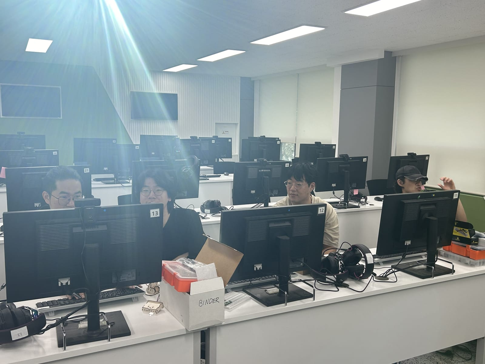
10:32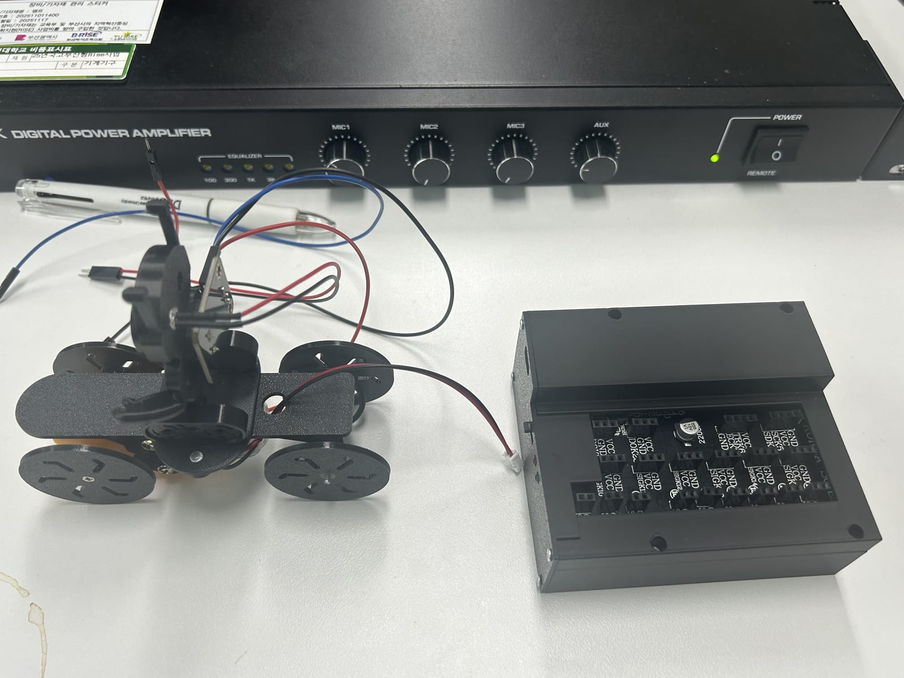
11:09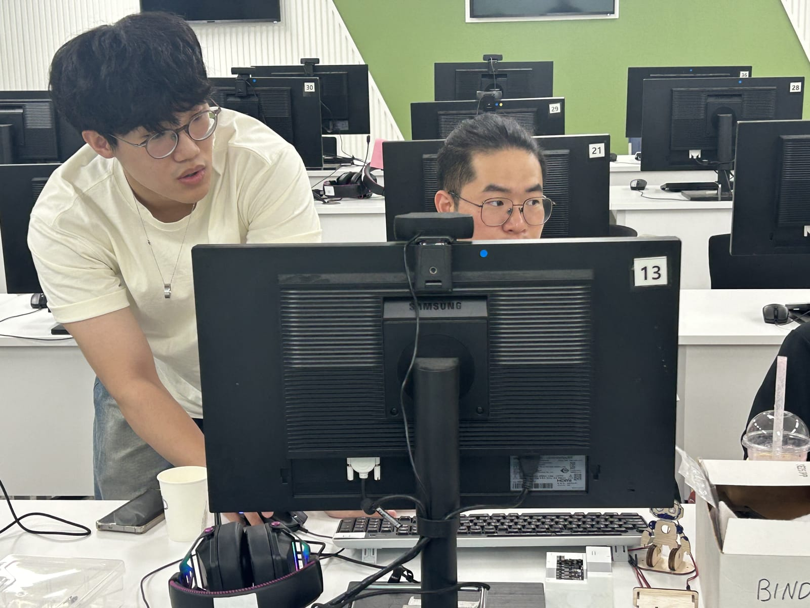
13:30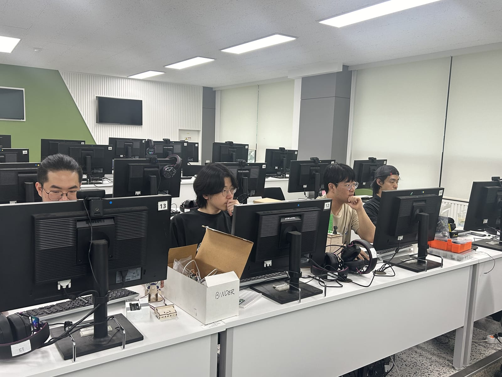
13:58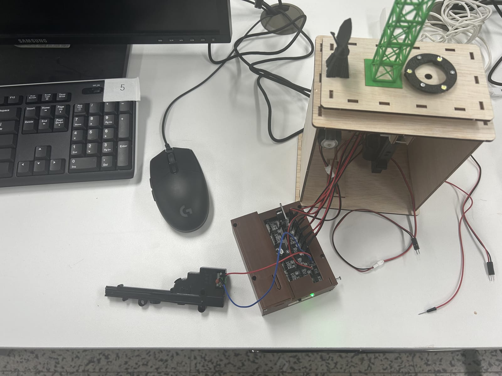
15:40
DAY 2
제작 협력업체 방문 & 웹 서비스 시연
2026.06.24 (화) · 10:44–11:20 KST제작 협력업체(D‑RISE)의 레이저 커팅 공장을 방문해 키트 부품 생산 공정을 견학했다. 이어 회의실에서 ARES 웹 서비스를 시연하고 부품·앱을 함께 검토했다.
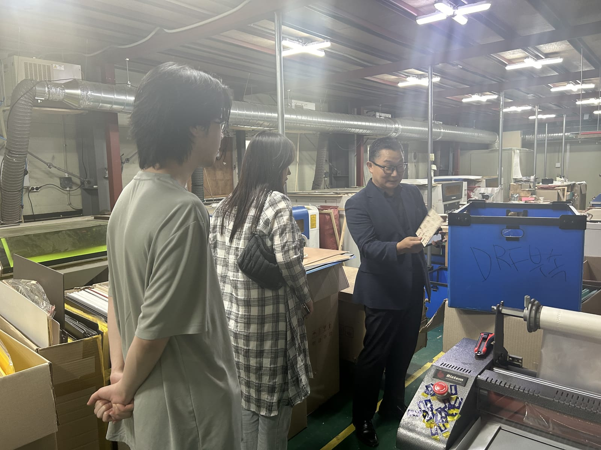
10:44 10:44
10:44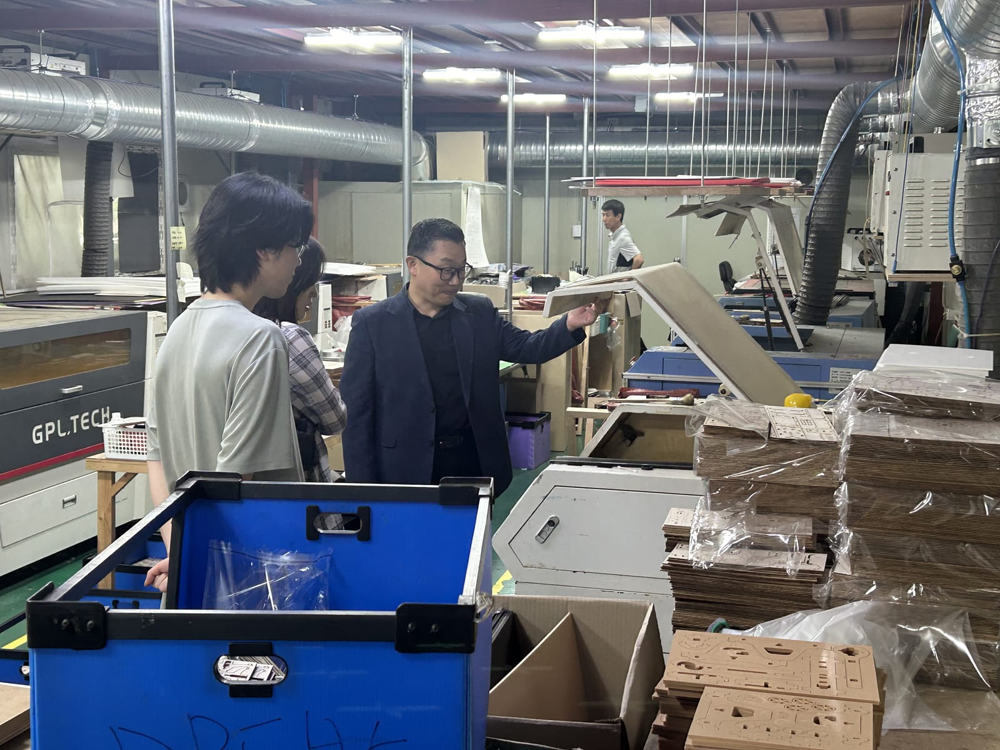
10:44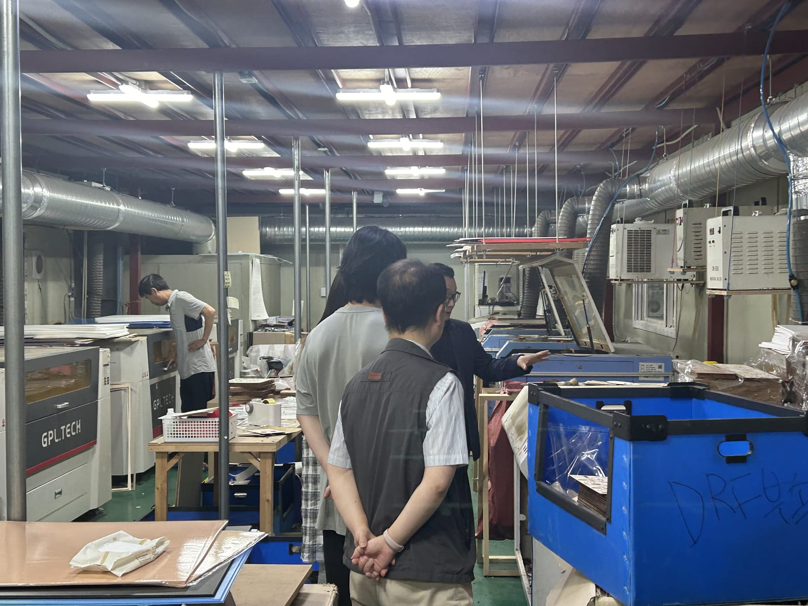
10:44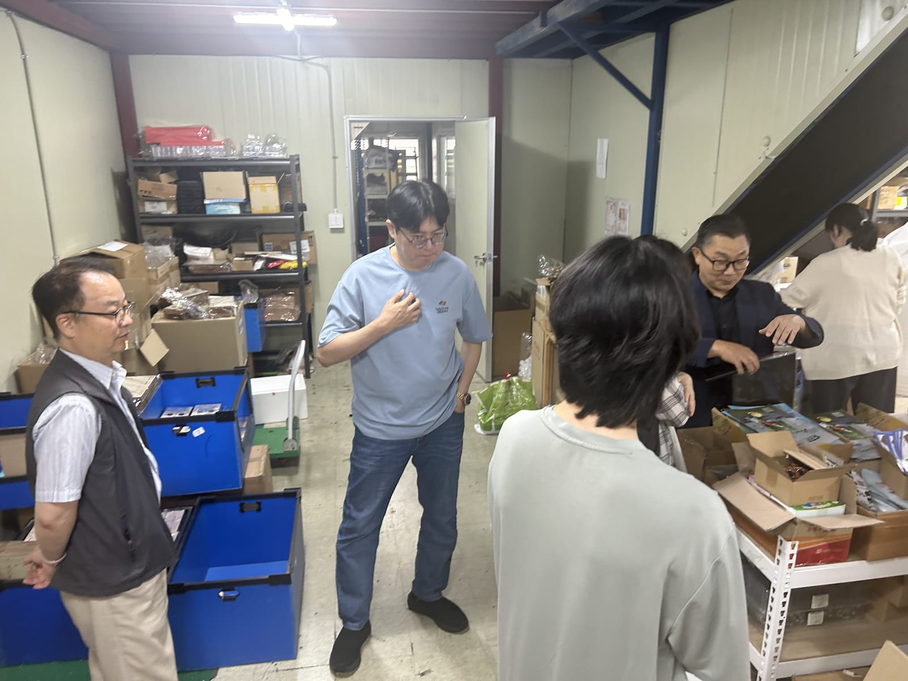
10:47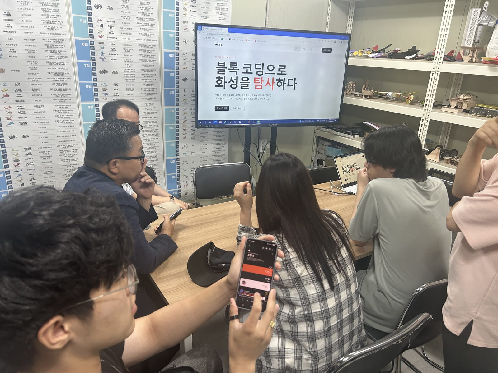
11:10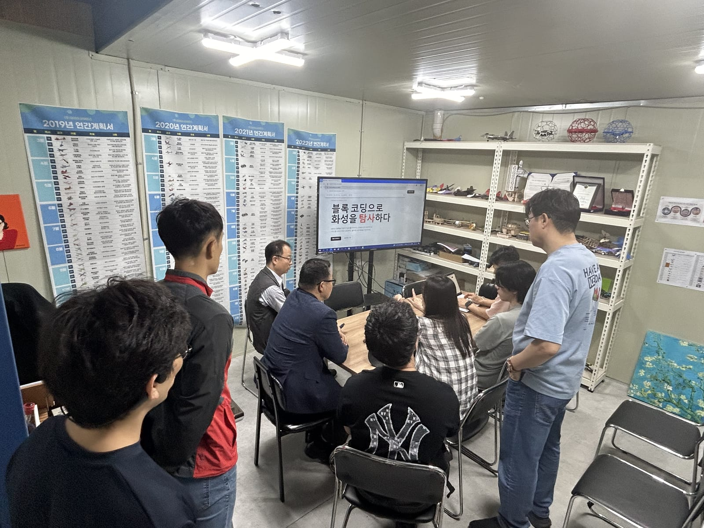
11:10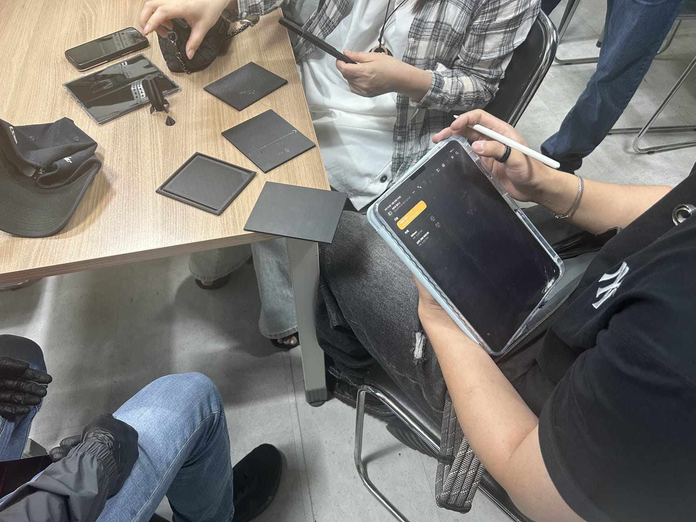
11:20
DAY 3
컴퓨터실 복귀 · 개발 지속
2026.06.25 (수) · 11:19 KST컴퓨터실로 복귀해 개발을 이어갔다. 책상마다 부품 키트를 두고 통합·검증 작업을 진행했다.
🧩 주요 업무 — 1차 Refactoring 계획 수립
지나치게 큰 함수·파일로 분석이 어려운 소스를 기능 단위로 분할하기 위한 「1차 Refactoring 계획」을 수립했다. 동작 보존(behavior-preserving)을 원칙으로, 비대 지점을 네 가지 문제 유형으로 분류하고 6단계 로드맵을 도출했다.
A · 거대 클로저
B · 거대 디스패처
C · 데이터 덩어리
D · 인라인 자산
- 유형 A — 거대 클로저(
simulation.js2333줄)를 공유 컨텍스트(ctx) + 서브시스템 14개로 분할. - 유형 B — 거대 디스패처(
process_data.py170줄 if/elif)를 도메인 핸들러 + dict 디스패치로 전환. - 유형 C — 한 배열·만능 함수(
blocklyconfig.js)를 카테고리별 파일로 분리. - 유형 D — 인라인 자산(
dashboard.html828줄)의 CSS·JS를 외부 파일로 추출. - 로드맵 — 위험 낮은 D·C부터 시작해 가장 어려운 A(simulation.js)를 마지막에 두는 6단계 점진 분할.
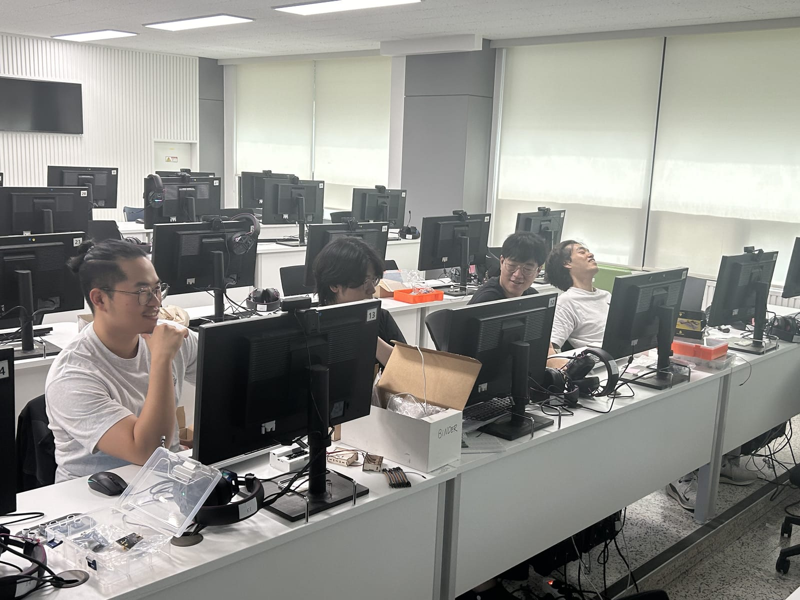
11:19